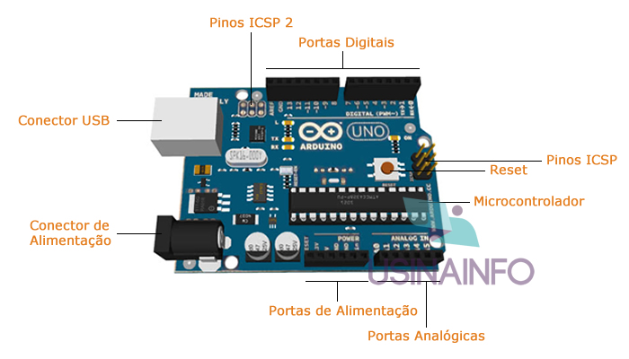

conceito: O Arduino é uma plataforma eletrônica open source, que tem como objetivo integrar hardware e software de maneira fácil, permitindo que pessoas com pouco conhecimento na área possam desenvolver as suas habilidades e aprendizado de maneira mais simples, aprendendo a eletrônica básica e programação.
O que é Arduino
Comandos Basicos

esse é o Arduino